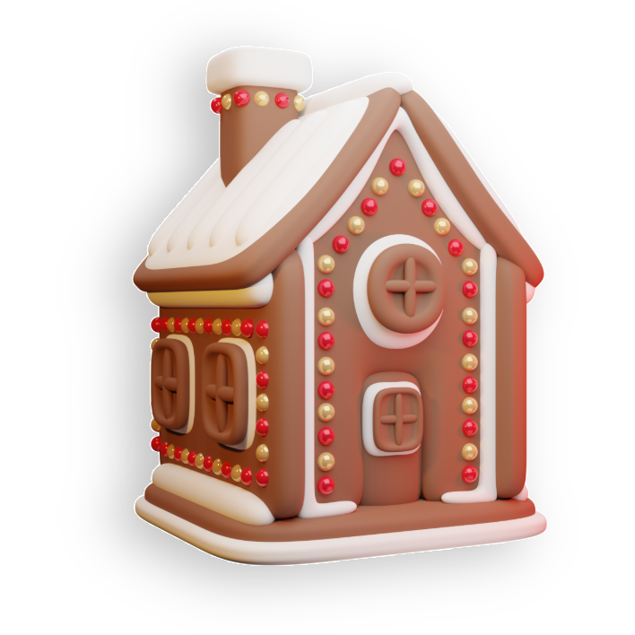

Winter
Solstice
Winter Solstice
Celebrations Around
the World
Introduction to the
Winter Solstice
The winter solstice is a significant astronomical event that
marks the
shortest day and the longest night of the year.
It occurs annually in
December in the Northern Hemisphere and
in June in the Southern
Hemisphere. This event has been observed and
celebrated by cultures
around the world for thousands of years,
often symbolizing rebirth,
reflection, and the triumph of light over darkness.
Global Celebrations of the
Winter Solstice
The Science
Solstice Across Hemispheres
Conclusion
Introduction
Global Celebrations
Solstice Traditions
Solstice
Across
Hemispheres

Northern
Hemisphere
In the Northern Hemisphere, the
December solstice marks
the
beginning of winter.
Countries like the United States,
Canada, Russia, and much of
Europe experience their shortest
day and longest night.
The weather
typically becomes colder, and
many cultures
have developed traditions to bring
light and warmth
into this dark time of year.
Southern
Hemisphere
Conversely, in the Southern
Hemisphere, the December
solstice signals the start of
summer. Nations such as
Australia,
South Africa, and
Argentina enjoy their longest
day and shortest night.
This
time is associated with warmth,
outdoor activities, and often, summer
vacations.
The Science Behind the
Solstice
The solstices occur due to the Earth's axial tilt of approximately 23.5 degrees relative
to its orbital plane around the Sun. This tilt causes different parts of the Earth
to receive varying amounts of sunlight throughout the year, leading to the
changing seasons. During the winter solstice, one hemisphere is tilted the
farthest away from the Sun, resulting in the shortest period of daylight.
At the exact moment of the solstice, the Sun reaches its lowest maximum elevation in the sky. In the Northern Hemisphere, this happens around December 21st or
22nd, when the Sun is directly over the Tropic of Capricorn at 23.5 degrees south latitude. In the Southern Hemisphere, the winter solstice occurs around June 20th
or 21st, when the Sun is over the Tropic of Cancer at 23.5 degrees north latitude.
The solstice is a precise moment in time, but its effects are felt throughout the day. The term "solstice" comes from the Latin words "sol" (sun) and "sistere" (to stand
still), because the Sun's apparent movement north or south comes to a stop before reversing direction.
Newgrange - Ireland
The prehistoric monument of Newgrange is aligned with the rising sun on the winter
solstice. Built over 5,000 years ago, it predates Stonehenge and the Egyptian pyramids.
Each year, a beam of sunlight illuminates the inner chamber, symbolizing the victory of
light over darkness.
Inti Raymi - Peru
Although traditionally held during the June solstice, which is the winter solstice in the
Southern Hemisphere, Inti Raymi is an ancient Incan festival honoring the Sun god Inti.
The celebration includes music, dancing, and sacrifices, reflecting the importance of the
Sun in agricultural societies.
Modranicht - Anglo-Saxon Tradition
Meaning "Mother's Night," Modranicht was observed by the Anglo-Saxons on the eve of the
winter solstice. It was a time to honor female deities and ancestral mothers, symbolizing
fertility and the rebirth of the Sun.
Koliada - Eastern Europe
Koliada is a Slavic festival celebrated during the winter solstice. Traditions include singing
carols, feasting, and lighting fires to symbolize the return of the Sun. The festival has
influenced modern Christmas and New Year traditions in the region.

Common Solstice Traditions
- Bonfires and Candles: Lighting fires and candles is a widespread tradition to represent light overcoming darkness.
- Feasting: Communities gather to share meals, strengthening social bonds during the cold months.
- Gift-Giving: Exchanging gifts symbolizes goodwill and sharing abundance.
- Decorating with Evergreens: Using evergreen plants like holly and mistletoe represents eternal life and protection.
- Reflection and Renewal: The solstice is a time for introspection, setting intentions for the coming year.
Conclusion
The winter solstice is a profound event
that connects humanity across time
and space.
Despite differences in culture and climate, people
around the
world share common themes in their
celebrations—hope, renewal, and the
enduring human
spirit. Understanding the science behind the solstice
enhances our appreciation of these traditions and
highlights our connection
to the cosmos.
© 2024 Winter Solstice Celebrations. All rights reserved.